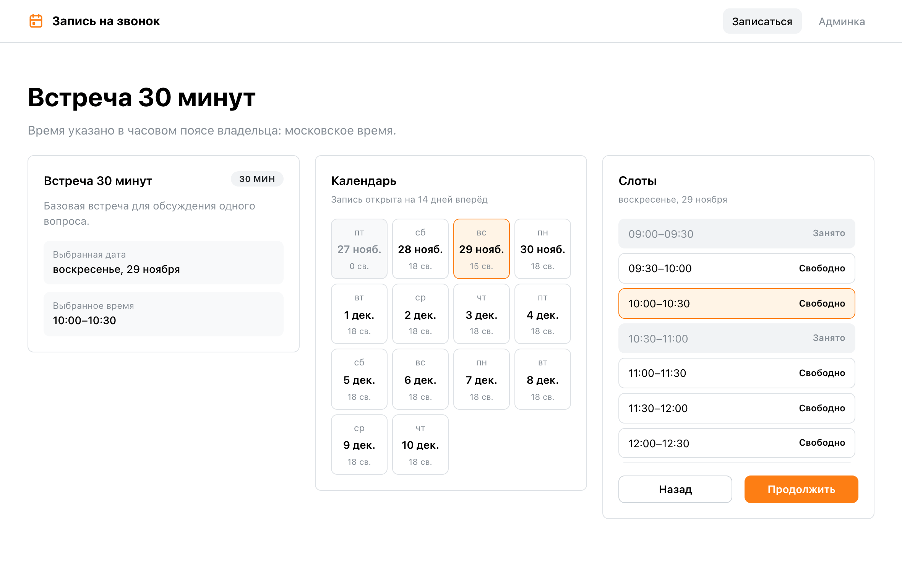
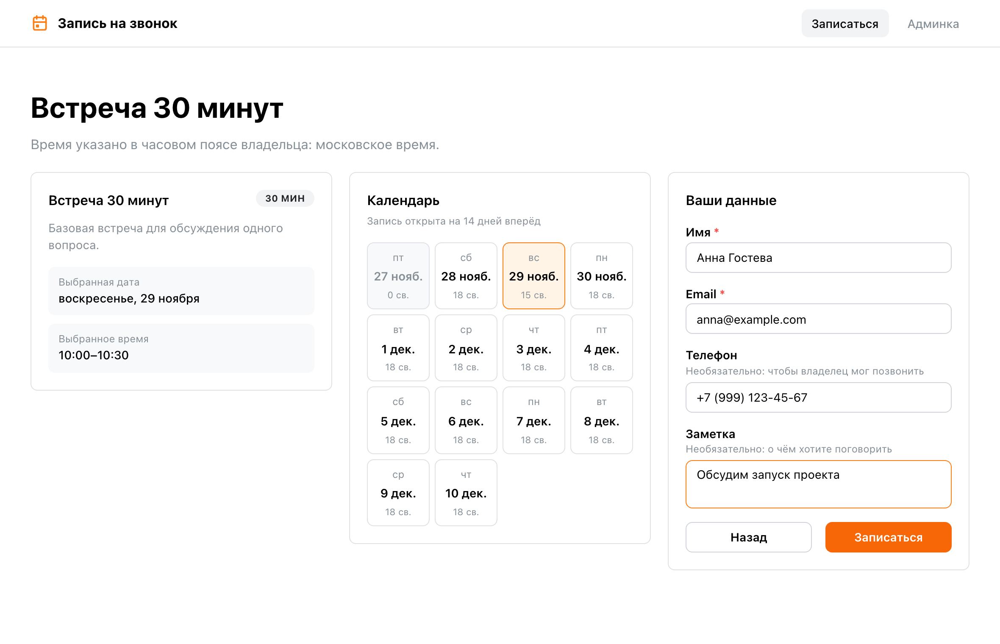
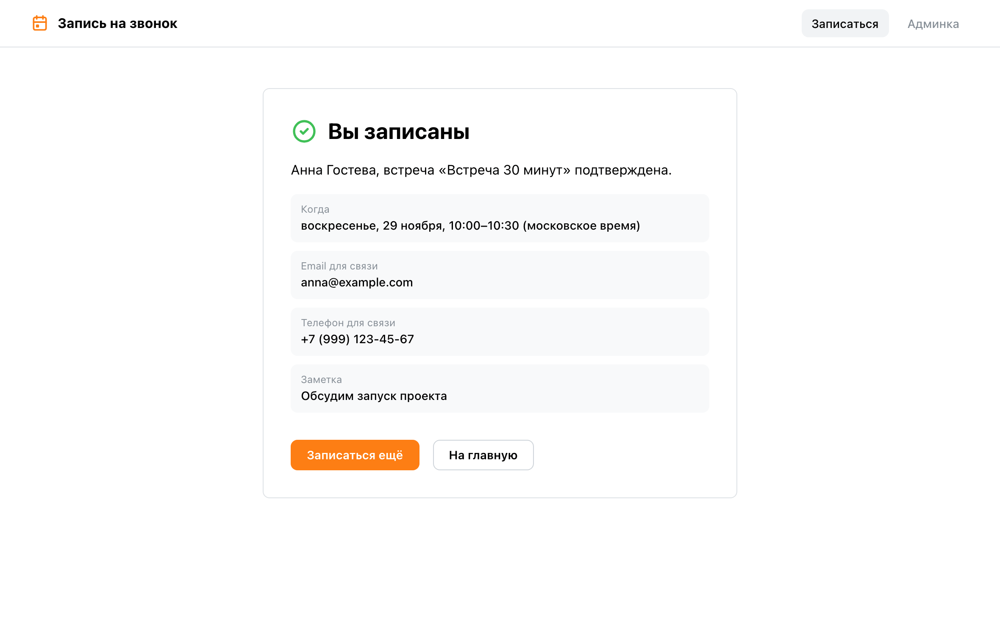
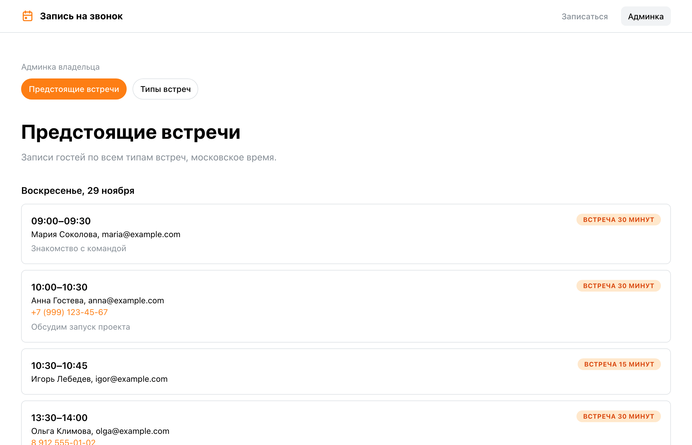
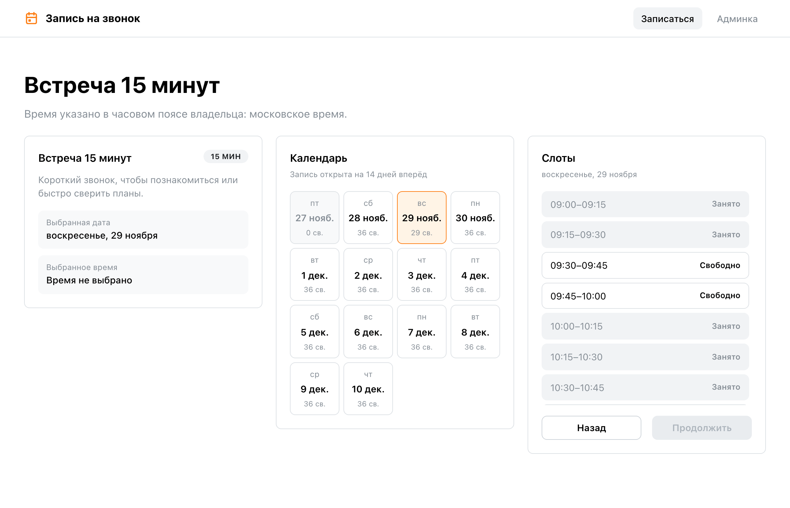
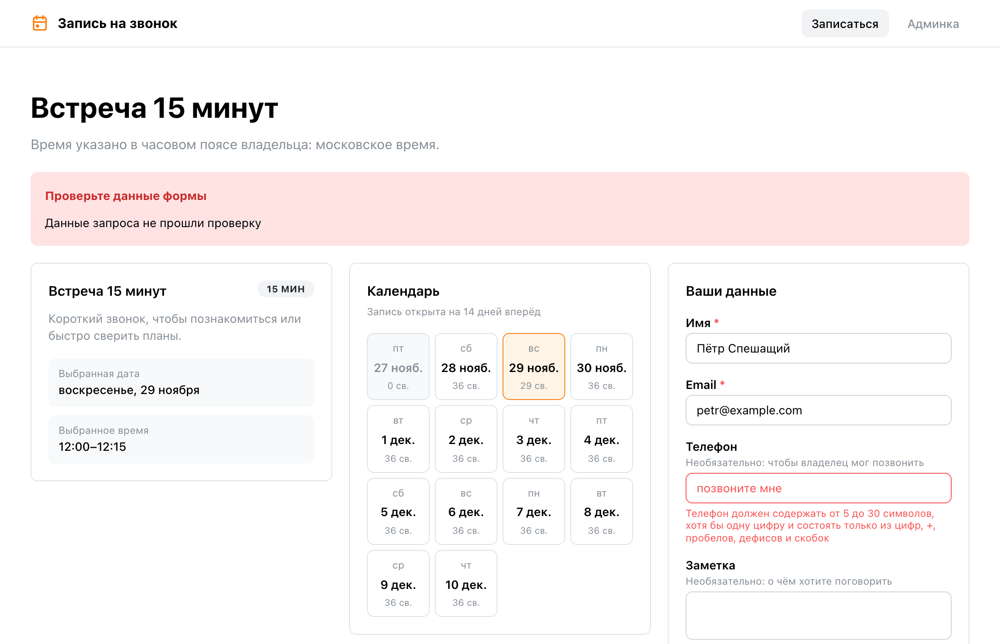
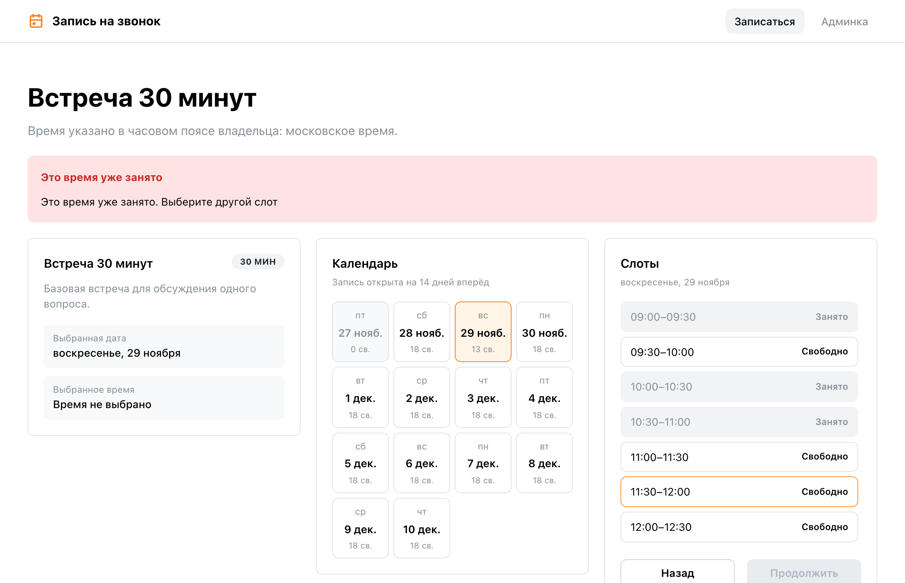

Что это за проект, что сделано и как. Восемнадцать схем покрывают оба репозитория: приложение «Запись на звонок» и агентный процесс вокруг него в GitHub. Все числа взяты из истории Git и GitHub Actions на 23:44 МСК 27 ноября 2026 года.
Хекслет·ИИ для разработчиков·отчёт и демо
Календарь звонков
Сервис записи на звонок и агентный конвейер вокруг него в GitHub. Два учебных проекта прошли путь от пустого репозитория до сдачи за один вечер. Человек поставил цель и ответил на 11 вопросов. Остальное сделали ИИ-агенты.
project-386 · приложениеproject-387 · приложение и агенты
пятница
27 ноября 2026
время московское
19:38Цель: довести проект до статуса «завершён»человек
19:38–21:11Проект 1. Приложение с нуля до деплоя1 ч 33 мин
21:14Цель: второй проект тожечеловек
21:14–23:44Проект 2. Агенты в GitHub Actions2 ч 30 мин
23:44Оба проекта: автопроверка пройденасдано
4ч 05мин
от первой цели до зелёной автопроверки второго проекта
2
репозитория: приложение и приложение с агентами
53
коммита, 7 из них написал агент в GitHub
109+ 4
тестов и браузерных сценария на настоящем сервере
31
запуск агента с моделью в GitHub Actions
11
вопросов человеку за весь вечер
Карта·два проекта, два репозитория
Репозиториев два. Во втором лежит то же приложение и агентный процесс вокруг него
Оба проекта входят в программу Хекслета «ИИ для разработчиков». Первый учит строить приложение вместе с агентом на своей машине, второй переносит агента в GitHub: задачи, pull request, ревью и работа по расписанию.
ai-for-developers-project-386
Проект 1. Календарь звонков
Модуль 1. Приложение с нуля до публичной ссылки
1
Сценарий и требования
роли гостя и владельца, ограничения, требования к API
2
Каркас приложения
одна команда проверок, CI, AGENTS.md
3
Скиллы и агентная среда
трекер, метки и документы домена в docs/agents
4
Первая фича: главная страница
страница с тестами, словарь проекта, первые ADR
5
Проектирование бронирования
карта из 10 решений, спецификация, 8 тикетов
6
Реализация
контракт, сервер, интерфейс, 94 теста, PR #21
7
Docker и деплой
образ слушает PORT, сервис опубликован на Render
Что получилось. Владелец заводит типы встреч, гость выбирает день и свободный слот на 14 дней вперёд. Пересечения запрещены даже между разными типами встреч.
25коммитов
21issue
2pull request
24прогона Actions
7 из 7 шагов · автопроверка пройдена
код одним коммитом 4e3e71f
ai-for-developers-project-387
Проект 2. Продолжение
Модуль 2. Рабочий процесс на GitHub с агентом
1
Импорт приложения
код первого проекта перенесён и собирается в образ
2
Агент в GitHub Actions
GitHub App OpenCode, вызов командой в комментарии
3
Issue и разбор
обращение, вопросы агента, спецификация, тикеты, автотриаж
4
От issue к pull request и ревью
PR #16 от агента, независимое ревью, предел запусков
5
Задачи по расписанию
ежедневный аудит Lighthouse заводит задачи без дублей
Что изменилось в приложении. Гость может оставить телефон, владелец видит его в списке встреч и звонит по ссылке. Эту доработку от разбора до кода сделал агент в GitHub.
28коммитов
15issue
11pull request
195прогонов Actions
5 из 5 шагов · автопроверка пройдена
Числа сняты на 23:44 МСК 27.11.2026, в момент зелёной автопроверки второго проекта. Дальнейшие правки отчёта в них не входят.
Хроника·27.11.2026, 19:30–23:50 МСК, в масштабе
Вечер по минутам: человек появляется девять раз, агенты работают без пауз
Каждая полоса стоит на своём времени. Полосы OpenCode это настоящие запуски в GitHub Actions, столбики внизу показывают, сколько прогонов стартовало за каждые пять минут.
119:38–19:57Каркас, CI, AGENTS.md, главная страница, словарь и первые ADR
822:50–23:04Замечания к PR агента, доказательства, решение о мерже
923:05–23:44Результаты в README, журнал аудита, отправка на проверку
Роли·пять участников, цвета одинаковы на всех схемах
Кто что делал: человек задаёт цель, два агента работают, автоматика проверяет
Агентов два, и они разные. Claude Code работает в терминале на машине владельца и ведёт проект целиком. OpenCode живёт в GitHub Actions и просыпается по команде в комментарии, по событию или по расписанию.
Человек
владелец репозиториев и аккаунтов
поставил 2 цели, каждую одной фразой
ответил на 11 вопросов в 6 заходах
ввёл 2 команды в терминале
выдал ключ модели с лимитом 20 $ и доступы
9появлений за вечер
Claude Code
агент в терминале, модель Claude Fable 5.2
вёл оба проекта от цели до сдачи
написал приложение: контракт, сервер, интерфейс, тесты
собрал конвейер в GitHub: воркфлоу, права, пределы
от имени владельца отвечал агенту и мержил
40коммитов из 53
OpenCode
агент в GitHub Actions, модель deepseek-v4.1-flash
разобрал обращение, написал спецификацию и 4 тикета
реализовал телефон гостя: PR #16
провёл 15 независимых ревью
5 аудитов, 5 задач по находкам
31запуск, 7 коммитов
GitHub Actions
обычные шаги без модели
все проверки на каждый пуш и PR
браузерный сценарий на точном коммите
предел запусков агента до вызова модели
формат коммитов и release-PR
219прогонов
Хекслет
платформа курса и экзаменатор
12 шагов с заданиями в двух проектах
автопроверка собирает Dockerfile и ждёт ответ 200 на главной
дальше работу смотрит наставник
51прогон автопроверки
Человекцель и ответы на вопросы
цель одной фразой
Claude Codeкод, issue, воркфлоу, команды агенту
пуш и команда /oc
OpenCodeGitHub ActionsPR, ревью, проверки, аудит
зелёный main и образ
Хекслетавтопроверка и статус
Кто говорит от имени владельца. В issue и pull request ответы «владельца» на вопросы агента, согласование спецификации и решения о мерже написал Claude Code с аккаунта владельца и по его поручению. Сам человек в GitHub ничего не писал: его участие целиком показано розовыми отметками на хронике.
Часть 1 · репозиторий 386 · 19:38–21:11
Проект 1. Приложение с нуля до публичной ссылки
Сервис записи на звонок по мотивам Cal.com. Его целиком написал Claude Code на машине владельца: контракт API, сервер, интерфейс, тесты, Docker-образ и публикацию.
Демо·настоящие экраны, сняты с запущенного приложения
Что умеет приложение: гость бронирует слот, владелец видит встречу
Ролей две. Владелец один и задан заранее: он создаёт типы встреч и смотрит список записей. Гость приходит без регистрации, выбирает тип встречи, день и свободное время.
/book/meeting-30

123
1Тип встречи. Название, описание и длительность. Слот длится столько же, сколько встреча.
2Окно записи. 14 дней начиная с сегодня. На каждом дне видно число свободных слотов.
3Слоты дня. Занятое время закрыто для выбора, выбранное подсвечено.
Путь гостя и владельца

4Гость оставляет контактыИмя и email обязательны, телефон и заметка по желанию.

5Видит подтверждениеДата и время по Москве, свои контакты и заметка.

6Владелец видит встречуВсе типы встреч в одном списке по дням. Телефон это ссылка для звонка.
Правила в действии

7Занято для всех типовПолучасовые записи закрывают и слоты пятнадцатиминутной встречи.

8Сервер проверяет телефонНомер без цифр отклонён с кодом 422, слот остался свободным.

9Слот заняли раньшеПока гость заполнял форму, время забронировал другой. Ответ 409 и понятное сообщение.
Правила·их проверяет сервер, интерфейс только показывает
Одно занятое время закрывает слоты всех типов встреч
День владельца длится с 09:00 до 18:00 по Москве. Шаг слотов равен длительности типа встречи. Две записи не могут пересекаться даже частично, но могут идти вплотную.
09:0010:0011:0012:0013:0014:0015:0016:0017:00
Записичто уже занято
Анна, 10:00–10:30
Глеб, 14:00–15:00
Встреча 15 минут36 слотов в день
Встреча 30 минут18 слотов в день
Консультация 60 минут9 слотов в день
слот свободенслот занятзапись гостя
Частичное наложение запрещено. Получасовая запись Анны закрывает часовой слот 10:00–11:00 целиком: он пересекается с ней на 30 минут.
Вплотную можно. Слот 10:30–11:00 свободен: встреча может начаться в момент окончания предыдущей. Интервал считается как [начало, конец).
Окно записи
сегодня+13 дней
14 календарных дней, окно сдвигается каждый день. Слот, который уже начался, недоступен. Рабочие часы и пояс заданы в коде сервера.
Два запроса сразу
гость Асервер проверка и запись одним шагом201гость Б409
Из одновременных запросов на пересекающееся время проходит ровно один. Второй получает 409 slot_taken и сообщение «Это время уже занято».
Телефон гостя
+7 (999) 123-45-67хранится как ввёл гость, в ссылке остаются цифры и плюсtel:+79991234567
необязателен5–30 символовцифры + ( ) - пробелхотя бы одна цифра
Архитектура·контракт первым
248 строк контракта задают API, клиент и сервер одновременно
API описано один раз в TypeSpec. Из него одной командой получаются OpenAPI, клиентский SDK и типы серверных обработчиков, поэтому фронтенд и бекенд не могут разойтись молча.
api/main.tsp
Контракт на TypeSpec. Единственный источник правды об API: 8 операций, сущности, коды ошибок.
mise run generate
openapi.yaml
OpenAPI 3.1. Лежит в репозитории, руками не правится.
CI повторяет генерацию и падает, если результат отличается от закоммиченного.
web/src/api/generated
Типизированный SDK клиента: функция на каждую операцию.
server/generated
Типы обработчиков Fastify для каждой операции.
Интерфейс
React 19, Vite 8, Mantine 9. Ходит в API только через SDK: прямой fetch запрещён линтером.
Сервер
Fastify 5. Маршруты и проверка запросов строятся из OpenAPI, правила записи в двух модулях.
Тесты сверяют каждый ответ с контрактом.
Один процесс Node.js 26
Отдаёт API под /api и собранный фронтенд. TypeScript исполняется без сборки, записи живут в памяти процесса.
Docker-образ
слушает порт из PORT
Render, публичная ссылка
проверка состояния по /api/health
Сколько строк в репозитории и кто их пишет
пишется рукамигенерируется
Контракт api/main.tsp248Сервер server/530Интерфейс web/src/1 578Тесты API, интерфейс, браузер1 524Сгенерированный код 21 файл3 272
Каждое неочевидное место стало отдельным вопросом в GitHub Issues. Ответы собраны в спецификацию, спецификация разрезана на тикеты, которые проверяются по отдельности. Труднообратимые решения записаны как ADR.
#1Карта решенийцель и список вопросов
#2–#1110 вопросов1 исследование на прототипе и 9 решений
#12Спецификацияповедение без открытых вопросов
#13–#208 тикетоввертикальные, с зависимостями
PR #21Реализациякоммит на каждый тикет, затем код-ревью
#2
Как связать контракт и кодTypeSpec → OpenAPI 3.1 → SDK клиента и типы Fastify. Результат генерации лежит в репозитории.
#7
Где хранить данныеВ памяти одного процесса. Проверка занятости и запись выполняются одним синхронным шагом.
#3
Какие сущности в контрактеТип встречи, слот, окно записи, запись. Типы и записи не редактируются.
#8
Какие операции у APIВсе адреса под /api. Ошибки в одном формате: 404, 409 и 422 с перечнем полей.
#4
Как устроено окно записи14 дней начиная с сегодня, 09:00–18:00 каждый день, пояс Europe/Moscow.
#9
Какие страницы нужныГлавная, выбор типа встречи, календарь со слотами, две страницы админки без входа.
#5
Какой шаг у слотовРавен длительности типа встречи. Общий шаг в 15 минут отвергнут: дробит день владельца.
#10
На каких границах тестироватьДва шва: HTTP API запущенного сервера и браузер с настоящим сервером.
#6
Что считать конфликтомЛюбое пересечение интервалов [начало, конец) независимо от типа. Вплотную можно.
#11
Как выпускать релизыrelease-please готовит release-PR по Conventional Commits, коммиты ссылаются на тикеты.
Порядок был не учебным. К 20:33 приложение уже работало локально: у агента не было доступа к GitHub, пока владелец не разрешил вход. Карта, спецификация и тикеты появились в трекере за следующие восемь минут и записывают решения, уже проверенные кодом. Коммиты разложены по тикетам после.
Проверки·одинаково локально, в CI и у агента на раннере
Одна команда отвечает, можно ли мержить
Тесты проверяют приложение снаружи, как это делал бы пользователь: настоящими HTTP-запросами и настоящим браузером. Внутренние функции напрямую не тестируются, поэтому код можно перестраивать, не переписывая тесты.
mise run checkэту же команду вызывают CI, git-хук перед пушем и агент в GitHub
lint
ЛинтерOxlint и oxfmt. Ловит прямой fetch в интерфейсе.
typecheck
Типыtsc по серверу, интерфейсу и тестам.
generate:check
Контракт = кодГенерация повторяется, расхождение роняет проверку.
test
109 тестовVitest: 84 по API запущенного сервера, 25 по интерфейсу.
e2e
4 сценарияPlaywright в Chromium с настоящим сервером.
Шов 1. HTTP API запущенного сервера
тестHTTP-запроссервер на свободном портуответ ↔ OpenAPI
Хранилище пустое, часы управляются тестом. Каждый ответ сверяется с контрактом: код должен быть описан у операции, тело проходит её схему. Здесь живут правила: окно записи, конфликт, частичное наложение, запись вплотную, одновременные запросы, телефон.
Шов 2. Браузер с настоящим сервером
Chromiumсобранное приложениетот же сервер
Ответы API не подменяются. Сценарии: гость записывается, и слот закрывается для всех типов; гость оставляет телефон, владелец звонит по ссылке; слот заняли, пока гость заполнял форму; владелец создаёт тип встречи.
Счёт тестов по проектам
APIинтерфейсбраузер
Проект 1
74203
97Проект 2
84254
113
Тест обязан уметь падать: правило ломали нарочно
проект 1, тикет #17Правило пересечения записей временно отключено. Защищающий тест упал, после возврата правила прошёл.
5 тестов упалиНа учебной ветке отключена проверка телефона. CI красный: сервер принял номер вместо ответа 422.
2 теста упалиВ адрес ссылки tel: возвращены пробелы и скобки. CI красный на регрессионном тесте.
ЛокальноХук перед пушем запускает все проверки, хук сообщения коммита проверяет формат Conventional Commits.
GitHub ActionsВоркфлоу ci на каждый пуш и pull request. Проверка check обязательна для мержа в main.
ХекслетВоркфлоу hexlet-check собирает Docker-образ, запускает его с PORT=8080 и открывает главную.
Часть 2 · репозиторий 387 · 21:14–23:44
Проект 2. Агент переезжает в GitHub
То же приложение, но работа над ним идёт через задачи и pull request. Агента зовут комментарием, его работу проверяют обычные шаги и отдельный ревьюер, а раз в сутки он сам ищет проблемы на опубликованной странице.
Проект 2·агент в GitHub Actions, репозиторий 387
Шесть воркфлоу: агент отвечает на события, обычные шаги держат его в рамках
Агента зовут командой /oc или /opencode в комментарии. Остальное запускается само: новое обращение, новый коммит в pull request, расписание. Модель у всех одна: opencode/deepseek-v4.1-flash.
СобытиеВоркфлоу и исполнительЧто получаетсяПредел
Команда в комментариив issue, в PR или к строке diff
opencodeOpenCodeсчёт запусков
Ответ, ветка и pull request. В issue агент создаёт ветку и открывает PR от имени приложения. В PR коммитит в его ветку.
60 минут4 запуска на PRтолько владелец и соавторы
Новое обращениеissue открыто
opencode-triageOpenCode
Разбор и метки. Что уже умеет приложение, каких условий не хватает, следующий шаг. Код не меняется.
15 минутботы и готовые тикеты пропускаются
Новый коммит в PRоткрыт или обновлён
opencode-reviewOpenCode, только чтение
Независимое ревью. Отдельный запуск сверяет diff с задачей и критериями из REVIEW.md. Править код он не может.
20 минутправила берутся из базовой ветки
Новый коммит в PRтот же момент
pr-browser-checkGitHub Actions
Доказательство работающей версии. Браузерные сценарии на точном коммите. Артефакт с результатом, trace и SHA.
15 минутартефакт хранится 30 дней
Новый коммит в PRтот же момент
pr-commitsGitHub Actions
Формат коммитов. Каждый коммит PR проверяется на Conventional Commits: по ним собирается список изменений релиза.
5 минут
Расписаниекаждый день в 06:17 МСК или вручную
opencode-auditLighthouseOpenCode, только задачи
Задачи по находкам. Обычные шаги снимают отчёт о странице, агент заводит задачу по каждой новой находке и не плодит дубли.
25 минутпо одному запуску за раз
Основа из первого проекта, без модели
ciКаждый пуш и PR: все проверки проекта. Обязательна для мержа в main.
release-pleaseПуш в main: обновляет release-PR с версией и списком изменений.
hexlet-checkКаждый пуш: автопроверка Хекслета. Файл принадлежит курсу, менять его нельзя.
От жалобы «не могу связаться с гостем» до мержа: вся переписка
Слева реплики владельца репозитория, справа ответы агента и автоматики. Каждая строка это настоящий комментарий в issue или pull request. Агент не угадывает требования: он задаёт вопросы, а объём подтверждается до первой строки кода.
Владелец репозиторияреплики написал Claude Code по поручению владельца
OpenCodeGitHub Actionsответы в том же обсуждении, с длительностью запуска
21:33
Обращение #4. Гость не вышел на звонок, а у владельца только его email. Нужен необязательный телефон./oc разбери обращение
Разбор. Нашёл форму, контракт и тесты со ссылками на строки. Это новая функция, не поломка. Шесть вопросов, к каждому рекомендуемый ответ.2 мин
21:36
Шесть ответов. Одно поле, мягкая проверка, email остаётся обязательным, телефон виден гостю и владельцу./oc запусти to-spec
Спецификация #6. Основной, негативный и соседний сценарии, цепочка от контракта до интерфейса.2 мин
21:38
Спецификация прочитана, сценарии совпадают с ответами./oc запусти to-tickets
Четыре тикета с зависимостями:#7 контракт и сервер#8 форма гостя#9 список владельца#10 сценарий и документы
21:41
Согласование. Объём подтверждён, можно реализовывать. Если по ходу поведение меняется, вопрос возвращается сюда до правки кода.
54 минуты паузы: Claude Code строит ревью, предел запусков и браузерную проверку
22:35
По коммиту на тикет, каждый тикет начинается с теста, в конце все проверки зелёные./oc запусти implement-spec
Pull request #16. Четыре коммита, 17 файлов: контракт, генерация, сервер, форма, список владельца, тесты, документация.4 мин+338 −11
22:45
Проверки зелёные: все тесты, браузерный сценарий на точном коммите, формат коммитов. Независимое ревью: дефектов нет, одно замечание к тексту ошибки.6 мин
22:50
Общий комментарий. Текст ошибки должен говорить, что в номере нужна хотя бы одна цифра.
Исправлено на сервере и в форме, добавлен тест.fix 05c2b6b2 мин
22:53
Комментарий к строке diff. В адрес ссылки tel: попадают пробелы и скобки, часть телефонов по такой ссылке не звонит.
В адресе остались цифры и плюс, добавлен регрессионный тест.fix 83855622 мин
22:56
Ревью эту ошибку пропустило. Нужен критерий, чтобы следующее ревью ловило такой класс ошибок.
В REVIEW.md добавлен критерий про адреса ссылок из данных гостя.docs 7d065341 мин
22:58
Перед мержем: сверь PR со спецификацией и критериями приёмки всех тикетов.
По каждому критерию назван тест или файл со строкой. Неподтверждённых нет.3 мин
23:02
Пятый, учебный вызов: проверяем, что предел работает.
Отказ. Использовано 5 запусков при пределе 4. Модель не вызывалась.limit_exhausted
23:04
Решение о мерже. Разобрано каждое замечание, принят риск: телефоны видны без входа. PR влит.
Обращение, спецификация и тикеты закрыты. release-please добавил доработку в release-PR версии 1.0.0.
1ч 31мин
от обращения до мержа, включая 54 минуты постройки конвейера
Pull request агента: семь коммитов, шесть доказательств, один отказ
Мерж разрешает не уверенность агента, а проверяемые факты: зелёные прогоны на последнем коммите, красные прогоны при сломанном поведении и артефакт, чей SHA совпадает с головой PR.
Что закоммитил агент
по команде implement-spec, 22:37–22:39
feat необязательный телефон в контракте и на сервере
тикет #7dd071c1
feat гость указывает телефон и видит его в подтверждении
тикет #8c23c372
feat владелец видит телефон гостя в предстоящих встречах
тикет #9ee9e246
feat сквозной сценарий с телефоном и документация
тикет #10c46fc3f
по замечаниям в PR, 22:52–22:57
fix объяснить, что телефону нужна хотя бы одна цифра
общий комментарий05c2b6b
fix очистить tel-адрес телефона гостя
комментарий к строке diff8385562
docs критерий очистки адресов ссылок из данных гостя
уточнение правил ревью7d06534
Что доказано перед мержем
Основной сценарий. Запись с телефоном, владелец видит номер: тесты API и браузерный сценарий.
Негативный сценарий. Некорректный телефон даёт 422 и не занимает слот. С отключённой проверкой падают 5 тестов.
Соседний сценарий. Запись без телефона и отказ при занятом времени работают как раньше, старые тесты не тронуты.
Регрессия ссылки. Если вернуть пробелы в адрес tel:, падают 2 теста.
Работающая версия. В браузерном артефакте записан SHA 7d06534, тот же, что у головы PR.
История. Все 7 коммитов в формате Conventional Commits и ссылаются на тикеты.
Предел: четыре обращения к агенту на один pull request
1общий комментарий
2комментарий к строке diff
3критерий в REVIEW.md
4сверка с критериями приёмки
5отказ до вызова модели
Счёт ведут обычные шаги, а не агент. Число запусков берётся из истории GitHub Actions, скрипт счёта выполняется из основной ветки. При отказе в PR появляется комментарий с причиной, последним SHA и ссылкой на логи. Следующее действие выбирает человек.
17
файлов изменено
+338
строк добавлено, 11 удалено
3
независимых ревью, по одному на версию
2
красных прогона на учебных ветках
25мин
от открытия PR до мержа
Предохранители·что стоит между командой агенту и основной веткой
Восемь шлюзов: агент может многое, но не всё и не для всех
У агента на раннере есть ключ модели и право писать в репозиторий. Поэтому каждое ограничение проверяют обычные шаги воркфлоу до того, как модель получит слово, и после того, как она закончила.
Шлюз и правилоЧто он останавливает
1. Кто написал комментарийКоманду принимают только от владельца, участников и соавторов репозитория. Комментарии ботов не считаются.
посторонний пишет /oc в чужом issue
2. Откуда pull requestДля PR из чужой копии репозитория агент и секреты недоступны.
fork подменяет воркфлоу, чтобы увидеть ключ
3. Остался ли бюджетНе больше четырёх запусков на PR. Счёт идёт по истории Actions, скрипт берётся из основной ветки.
бесконечный цикл «исправь ещё раз»
4. Сколько времениИнтерактивный запуск живёт 60 минут, затем получает сигнал остановки. У разбора 15, у ревью 20, у аудита 25.
зависший агент, который жжёт минуты и деньги
5. Что может токенУ задания право только читать код. Ветку и PR создаёт приложение OpenCode. Ревьюер и аудитор не могут править файлы.
ревьюер «заодно поправил» проверяемый код
6. Чьи правила исполняютсяНастройки и критерии ревьюера берутся из базовой ветки. Код PR лежит рядом как данные.
PR переписывает правила собственной проверки
7. Что провереноВсе проверки проекта обязательны для мержа. Рядом браузерный сценарий на точном коммите, формат коммитов и независимое ревью.
«у меня всё зелёное» без доказательств
8. Кто мержитОсновная ветка защищена. Агент открывает PR, решение о мерже записывает и принимает владелец.
агент сам влил свою работу в main
Как это выглядело на деле: 40 комментариев, 10 запусков модели
29 пропущено: в комментарии нет команды или автор бот10 запусков1
Воркфлоу opencode просыпается на каждый комментарий в issue и PR, включая отчёты самих ботов.1 отказ по пределу. Модель при этом не вызывается.
Чем может закончиться запуск: причина всегда названа
successагент ответил или закоммитил
limit_exhaustedпредел запусков на PR исчерпан
timeoutработа не уложилась в 60 минут
infraнет ключа модели или сбой окружения
agent_failedагент завершился с ошибкой
Независимое ревью·отдельный запуск агента на каждую версию pull request
15 ревью за вечер: самое ценное найдено в правилах самого конвейера
Ревьюер это тот же OpenCode, но в отдельном запуске, без контекста автора и без права править файлы. Он читает diff, задачу и критерии из REVIEW.md, а замечания публикует комментарием. Править или нет, решает человек.
13 замечаний. Секрет модели был доступен коду из проверяемого PR. Скрипт счёта запусков брался из PR. Повтор старого прогона обходил предел.
#15
Аудит по расписанию5:104:29
10 замечаний. Одна находка в двух категориях давала дубли задач. Текст с проверяемой страницы попадал к агенту без оговорки, что это данные.
#16
Телефон гостя, PR агента6:052:124:04
1 замечание к коду: текст ошибки не называл обязательную цифру. Ошибку в адресе ссылки пропустило.
#22
Замеры скорости вне аудита1:35
Дефектов нет. Отмечен риск: настоящая деградация скорости не станет задачей сама.
#23
Результаты в README5:131:55
3 фактические ошибки в отчёте: время реализации, длительность ревью, покрытие тестами. Сверено с историей прогонов.
#24
Журнал аудита5:261:461:42
Непроверенная ветка правила и противоречие двух шагов в запросе агенту. Оба исправлены до мержа.
#26
Новые запуски аудита в README2:31
Дефектов нет. Одна формулировка расходилась с описанным исключением.
Чего ревью не увидело и что с этим сделали
ПропускВ адрес ссылки tel: номер попадал с пробелами и скобками. Ревью PR #16 этого не заметило: в критериях не было ничего про ссылки из данных гостя.
Кто нашёлВладелец при чтении diff. Замечание ушло агенту комментарием к конкретной строке.
Защита от повторенияРегрессионный тест на адрес ссылки и новый критерий в REVIEW.md. Тест проверен: при возврате ошибки CI падает.
Только чтениеПравка файлов и сеть запрещены. Разрешены команды просмотра git и gh.
Свои правилаКритерии и настройки из базовой ветки, а не из проверяемого PR.
Каждая версияНовый коммит отменяет идущее ревью и запускает новое.
От 1,5 до 8,5 минутСамые долгие ревью у PR, которые меняют воркфлоу.
Работа по расписанию·каждый день в 06:17 МСК, без человека
Аудит сам находит проблемы страницы и не заводит одну задачу дважды
Измеряют обычные шаги, а не модель: они будят сервис и снимают отчёт Lighthouse. Агенту достаётся то, что у него получается лучше: понять находку, найти похожую задачу и описать проблему человеческим языком.
запускРасписаниеили кнопка Run workflow
шагБудим сервисбесплатный хостинг засыпает
шагLighthouseотчёт о главной странице
шагСводка находокдоступность, лучшие практики, SEO
агентАудиторищет задачу по идентификатору находки
Что агент делает с каждой находкой
Задачи ещё нетСоздаёт задачу: проблема, предлагаемое действие, связь с отчётом и ссылка на прогон.
Закрыта как выполненнаяПроблема вернулась: новая задача со ссылкой на прежнюю.
Задача уже открытаНичего: ни новой задачи, ни повторного комментария.
Закрыта «не планируется»Ничего: человек уже отказался её брать.
Данных нетНичего не создаёт и не закрывает: молчание сервиса не значит, что проблема исправлена.
Любой исходЗапись в журнал #25: вывод последнего прогона хранится дольше артефакта.
Оценки Lighthouse в пяти запусках
Судьба пяти задач первого запуска
#17Недостаточный контраст текстаоткрыта
#19Нет meta descriptionоткрыта
#18Задержка первого вводашум раннера
#20Цепочки сетевых запросовшум раннера
#21Время блокировки потокашум раннера
Скорость скачет от 0,80 до 0,98 для одной и той же страницы: замер зависит от загрузки общего раннера. Три задачи закрыты как «не планируется», замеры скорости убраны из находок. Оценка осталась в отчёте.
Дублей нетЗапуски со второго по пятый нашли те же находки и не создали ни одной новой задачи.
Узкие праваАудитору разрешены три команды: список задач, просмотр задачи, создание задачи.
Решает человекЗадача аудита это входящее обращение. Брать ли её в работу, решает владелец.
Часть 3 · итоги
Числа, грабли и дорожная карта
Что получилось в сумме, что сломалось по дороге и что осталось открытым.
Числа·история GitHub на 23:44 МСК 27.11.2026
219 прогонов, ни одного красного в основной ветке
Оба красных прогона за вечер сделаны нарочно на учебных ветках, чтобы доказать, что тесты умеют падать. Большая часть «пустых» запусков это фильтр, который отсекает комментарии без команды агенту.
Прогоны в репозитории проекта 2 по воркфлоу, всего 195
выполненкрасный нарочноне понадобился
opencodeкоманды в комментариях
1129
40hexlet-checkавтопроверка курса
39
39ciвсе проверки проекта
33
35opencode-reviewнезависимое ревью
157
22pr-browser-checkбраузер на коммите PR
184
22pr-commitsформат коммитов
154
19release-pleaserelease-PR
11
11opencode-auditаудит по расписанию
5
5opencode-triageразбор новых обращений
2
«Не понадобился» значит, что воркфлоу проснулся и сам решил не работать: в комментарии нет команды, новый коммит вытеснил идущее ревью, pull request открыл бот релизов. В репозитории проекта 1 ещё 24 прогона, все зелёные: 12 автопроверок, 8 запусков ci, 4 запуска release-please.
Служебные задачи второго проекта: журнал аудита и две проверки настроек агента. Открытыми остались четыре: два обращения аудита, одно обращение пользователя и журнал.
Кто автор 53 коммитов
Claude Code
40
OpenCode
7
Хекслет
6
Шесть коммитов Хекслета это заготовки репозиториев: README и файл автопроверки. Pull request: 10 открыл Claude Code, 1 агент OpenCode, 2 бот релизов.
Грабли·двенадцать поломок и что после них изменилось
Что пошло не так и как это исправили
Ни один из двух проектов не прошёл гладко. Ниже всё, что сломалось по дороге, включая ошибку самого ведущего агента. Каждая поломка закончилась правкой кода, настроек или правил, а не обходом.
проект 1 · окружениеМенеджер пакетов не скачал GitHub CLI
Реестр готовых сборок недоступен из сети владельца, без CLI нельзя ни пушить, ни заводить задачи.
gh и mise поставлены с GitHub Releases после сверки контрольных сумм.
проект 1 · политикаАгент не может поставить скиллы сам себе
Установщик меняет конфигурацию агента. Это запрещено даже после прямой просьбы владельца.
Одну команду установки ввёл человек.
проект 1 · зависимостиГенератор SDK падает на TypeScript 7
Он использует прежний API компилятора, которого в новой версии нет.
Версия закреплена на TypeScript 6, причина записана в ADR 0007.
проект 2 · запуск агентаПервый запуск упал до вызова модели
Готовый action узнаёт версию OpenCode анонимным запросом к GitHub API и получил отказ по лимиту.
OpenCode ставится закреплённой версией из npm.
проект 2 · секретыКлюч модели был доступен правилам из PR
Ревьюер читал настройки из проверяемой ветки. PR мог расширить ему права рядом с ключом.
Настройки берутся из базовой ветки, код PR лежит отдельно как данные.
проект 2 · пределПредел запусков можно было обойти
Повтор старого прогона не считался, а скрипт счёта выполнялся из версии pull request.
Считаются все прогоны по истории Actions, скрипт берётся из основной ветки.
проект 2 · gitХуки отклонили бы коммит агента
Служебный коммит OpenCode с произвольным текстом не прошёл бы проверку формата, и работа запуска пропала бы.
Хуки на раннере выключены, формат проверяет отдельный воркфлоу.
проект 2 · скиллыСкилл хотел сам создать ветку и PR
В GitHub это делает OpenCode. Два хозяина ветки оставили бы работу без pull request.
В AGENTS.md правило: работать в текущей ветке, PR откроет OpenCode.
проект 2 · командыОбычная фраза разбудила агента
Команда сработала из середины комментария, где её упомянули в тексте. Запуск съел бюджет.
Команду пишут, только когда агента действительно зовут.
проект 2 · ревьюРевью пропустило ошибку в ссылке
Номер попадал в адрес tel: с пробелами. В критериях ревью такого класса ошибок не было.
Регрессионный тест и новый критерий в REVIEW.md.
проект 2 · аудитАудит завёл три задачи по шуму
Оценка скорости на общем раннере была 0,80, а через шесть минут 0,98 для той же страницы.
Замеры скорости убраны из находок, отклонённые задачи не заводятся заново.
проект 2 · ведущий агент«Исправлено» раньше исправления
Скрипт правки README не применился, а комментарий об исправлении Claude Code уже отправил.
Правка внесена следом, комментарий уточнён. Ревью сверило текст с историей прогонов.
Дорожная карта·состояние на конец вечера и следующие шаги
Что сделано, что открыто и чего здесь нет
Оба проекта сданы на автопроверку и ждут ревью наставника. Это учебный сервис: часть ограничений заложена условиями курса, часть осталась как осознанный долг.
Сделано
подтверждено прогонами и статусом курса
12 шагов из 12Проект 1: 7 из 7. Проект 2: 5 из 5. Обе автопроверки зелёные.
Приложение опубликованоЗапись на звонок с правилами занятости, 8 операций API, Docker-образ, сервис на Render.
Конвейер в GitHub работаетРазбор обращений, реализация по команде, ревью каждой версии, браузерная проверка, ежедневный аудит.
Доработка прошла весь путьТелефон гостя: от жалобы владельца до мержа pull request агента за полтора часа.
Открыто
ждёт решения человека
Ревью наставникаСодержание проектов смотрит человек: автопроверка знает только про сборку и главную страницу.
#12 Встреча в свой календарьОбращение разобрано автоматически, агент ждёт ответов на вопросы.
#17 и #19 Находки аудитаКонтраст текста и отсутствие meta description. Обе настоящие, обе мелкие.
Релиз 1.0.0release-PR готов в обоих репозиториях. Мерж опубликует релиз, поэтому решение оставлено владельцу.
Дальше
если развивать после курса
Выкатить версию с телефономИ заменить ручной деплой автоматическим после зелёного main.
База данных вместо памятиПроверка занятости переедет в транзакцию или ограничение базы.
Вход в админкуСейчас список встреч с контактами гостей открыт по ссылке.
Больше сигналов для аудитаОшибки и метрики работающего приложения, а не только отчёт о странице.
Оговорки, без которых картина неполная
Данные живут в памятиПерезапуск или новый деплой стирает записи и созданные типы встреч. На бесплатном тарифе сервис засыпает после простоя.
Решения владельца принимал агентОтветы на вопросы разбора, согласования и мержи сделал Claude Code по поручению. Человек отвечал только ему.
Авторизации нетТак задано условиями курса. Поэтому телефоны гостей видны любому, кто знает адрес админки.
Трекер первого проекта заполнен после кодаРешения записаны по работающему прототипу, а не до него. Скиллы применялись как порядок работы, без слэш-команд.
Опубликована версия первого проектаТелефон гостя есть в коде репозитория 387, но на Render выкачен код из репозитория 386.
У агента в GitHub одна модельВесь цикл прошёл на deepseek-v4.1-flash. Более сильные модели в рабочем пространстве курса отключены.
Короткие ответы
Это один репозиторий или два?
Два. В ai-for-developers-project-386 лежит приложение первого проекта. В ai-for-developers-project-387 лежит то же приложение и агентный процесс второго проекта: код перенесён одним коммитом, дальше репозитории живут раздельно.
Что делает приложение?
Владелец календаря заводит типы встреч с длительностью. Гость без регистрации выбирает тип, день из ближайших 14 и свободный слот, оставляет имя, email и по желанию телефон. Занятое время закрывается для всех типов встреч, владелец видит записи одним списком.
Кто писал код?
Приложение первого проекта, воркфлоу и документацию второго написал Claude Code. Доработку «телефон гостя» во втором проекте от разбора до кода сделал OpenCode в GitHub Actions: 7 коммитов из 53.
Что делал человек?
Поставил две цели, каждую одной фразой, ответил на 11 вопросов и ввёл 2 команды в терминале. Вопросы были о доступах и окружении: как установить GitHub CLI и mise, как войти в GitHub и Render, кто установит скиллы, можно ли менять настройки репозитория, где взять ключ модели. Решения по продукту и коду человек не принимал.
Сколько это заняло?
4 часа 05 минут от первой цели до зелёной автопроверки второго проекта: 1 час 33 минуты на первый проект и 2 часа 30 минут на второй.
Какие модели работали?
Claude Code работал на Claude Fable 5.2. Агент OpenCode в GitHub работал на opencode/deepseek-v4.1-flash с ключа рабочего пространства курса с лимитом 20 долларов. Фактический расход в этот отчёт не входит: он виден в консоли OpenCode.
Как позвать агента в GitHub?
Написать комментарий с командой /oc или /opencode в issue, в pull request или к строке diff. Команду принимают только от владельца и соавторов репозитория. В issue агент создаст ветку и откроет pull request, в pull request закоммитит в его ветку.
Может ли агент сам влить код в основную ветку?
Нет. Агент открывает pull request. Основная ветка защищена обязательной проверкой, а решение о мерже записывает и принимает владелец.
Что будет, если агент зациклится или зависнет?
На один pull request разрешено четыре запуска, пятый отклоняется до вызова модели. Один запуск живёт не дольше 60 минут. В обоих случаях в обсуждении появляется комментарий с причиной и ссылкой на логи.
Зачем ревью, если его делает тот же агент?
Это отдельный запуск без контекста автора и без права править файлы, с критериями из базовой ветки. Он нашёл серьёзные ошибки в правилах самого конвейера, включая доступ проверяемого кода к ключу модели. Человека он не заменяет: ошибку в адресе ссылки для звонка ревью пропустило.
Где хранятся данные и можно ли этим пользоваться всерьёз?
Записи живут в памяти процесса и пропадают при перезапуске, входа в админку нет. Это условия учебного проекта. Для настоящей работы нужны база данных и авторизация, обе стоят в дорожной карте.
Что осталось сделать?
Дождаться ревью наставника. Решить судьбу трёх открытых задач: обращения про добавление встречи в свой календарь и двух находок аудита. Влить или закрыть release-PR версии 1.0.0 в обоих репозиториях.